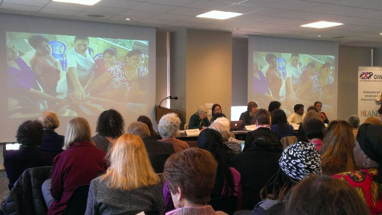
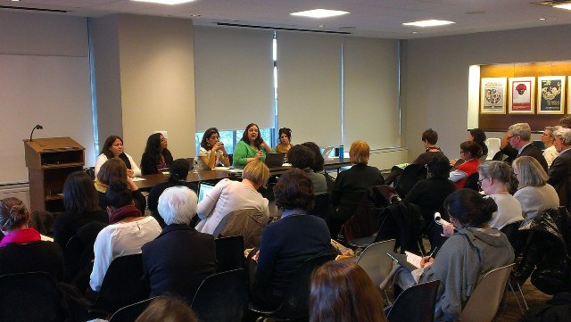
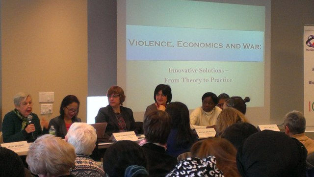

پذيرش > تریبون > مقالات > مروری کوتاه بر پنجاه و هفتمین نشست کمیسیون وضعیت زنان / پریسا کاکائی


 مروری کوتاه بر پنجاه و هفتمین نشست کمیسیون وضعیت زنان / پریسا کاکائی مروری کوتاه بر پنجاه و هفتمین نشست کمیسیون وضعیت زنان / پریسا کاکائی
3 فروردین 1392 - - نسخه قابل چاپ
تغییر برای برابری
پنجاه و هفتمین نشست کمیسیون وضعیت زنان در سازمان ملل، روز جمعه پانزدهم مارس، به پایان رسید. این نشست که از تاریخ چهارم تا پانزدهم فوریه به طول انجامید، در مقر سازمان ملل واقع در نیویورک برگزار شد. کمیسیون مزبور به عنوان یکی از کمیسیون های کاربردی وابسته به شورای اقتصادی و اجتماعی سازمان ملل محسوب می شود و هدف آن ترویج برابری جنسیتی و پیشرفت زنان است. هر سال نمایندگان کشورهای عضو در نیویورک با برگزاری جلساتی، به ارزیابی روند پیشرفت برابری جنسیتی و چالش های پیش رو می پردازند. سال 2012 میلادی، نشست مزبور توانمندسازی زنان روستایی و نقش آنها را در ریشه کن کردن فقر و گرسنگی بررسی نمود و امسال، 2013 نیز اولویت موضوع به حذف و پیشگیری تمامی اشکال خشونت علیه زنان و دختران اختصاص داده شد.

اما جذابیت اصلی این نشست برای فعالان و محققان حوزه زنان، نشست های جانبی است که هر سال در ساختمان های اطراف سازمان ملل برگزار می شود و در این نشست ها نمایندگان سازمان های غیردولتی و فعالان جامعه مدنی کشورهای مختلف جلساتی را تشکیل می دهند که ورود به بسیاری از این جلسات آزاد است و البته برخی دیگر نیز نیاز به پیش ثبت نام دارند. این جلسات، در حقیقت امکانی برای آشنایی فعالان جامعه مدنی و فمینیست های کشورهای مختلف است که با مسائل کشورهای دیگر آشنا شده و روش ها و استراتژی های موجود را مبادله کنند. به طور مشخص، امسال جلسات گوناگون نشان داد که اشکال خشونت در هر کشور و بر اساس شرایطی که درگیر آن هستند متفاوت است. زنان در بعضی کشورها قربانیان جنگ های داخلی هستند و در برخی دیگر، تجربه جنگ های بین المللی را دارند، آنها همچنین از خشونت های رایج در کشورهای دیگری که جنگ را تجربه نکرده اند مانند خشونت های خانگی، عمومی، دولتی و مذهبی نیز رنج می برند. زنان کشورهای جنگ زده همه گی بر این امر توافق داشتند که قربانیان اصلی جنگ از هر نوع، چه داخلی و چه خارجی، زنان و کودکان هستند، چرا که اسلحه به مردان قدرت مضاعفی برای اعمال خشونت می دهد. "یک مرد متجاوز غیرمسلح می تواند به یک زن تجاوز کند اما مرد متجاوز مسلح، می تواند به زنان یک دهکده تجاوز کند."

یکی دیگر از مباحث خشونت های بین المللی که تقریبا تمامی کشورها را به خود مشغول کرده و زنان در گروه های مختلف سعی در مبارزه با آن دارند مبحث قاچاق انسان به ویژه زنان و دختران است که بیشتر آن به منظور بهره کشی جنسی صورت گرفته و بخشی از آن نیز برای انواع دیگر بهره کشی مانند برده گی غیرجنسی انجام می شود. زنان و دخترانی که از کشورهای مختلف قاچاق می شوند اغلب در کشورهای مقصد در روسپی خانه ها به تن فروشی واداشته شده و یا از آنها در پورنوگرافی استفاده می شود. اما چند درصد از زنان درگیر روسپیگری توسط شبکه های قاچاق انسان به تن فروشی واداشته شده اند؟ پیوند این دو پدیده تا چه حد می تواند بر راه کارهای مورد نظر تاثیر گذار باشد؟ البته بحث های مطرح در نشست های فوق بیشتر به قسمت دوم یعنی مساله روسپیگری پرداختند. برخی از مدل سوئد به عنوان مدلی موفق یاد کردند و برخی دیگر معایب و ناکارآمدی آن را مورد بررسی قرار دادند. همچنین ادبیاتی که در این زمینه توسط جامعه مدنی به کار می رود نیز به بحث و گفت و گو گذاشته شد. آیا به کار بردن کلمه "روسپی" برچسب زدن به حساب نمی آید؟ آیا می توان جایگزین هایی مانند "زنان درگیر روسپیگری" را پیشنهاد کرد؟ روی هم رفته، به نظر می رسد رویکردها و برنامه های عمل در کشورهای مختلف با توجه به شرایطی که آن را تجربه می کردند متفاوت است و ارائه طرحی واحد و کلی آسان نیست.

بنیادگرایی دینی و تاثیر آن بر وضعیت زنان و دگرباشان نیز یکی از مباحث مطرح به ویژه در کشورهای منطقه بود. در جلسات مربوطه سعی شد که استراتژی های بنیادگرایان و پاسخ های فمینیست ها به آنها در کشورهای مختلف بررسی شود. به نظر می رسد رویکرد مشترکی که بنیادگرایان دینی چه اسلامی و چه مسیحی در پیش گرفته اند بهره بردن از پیام های برانگیزاننده عواطف و احساسات برای ارتباط گیری با جامعه و تاثیرگذاری هر چه بیشتر به ویژه در زمینه سقط جنین و حقوق دگرباشان است. در همین رابطه گروه های مختلف فمینیستی تجربه مبارزات خود از جمله کمپین ها و به چالش کشیدن مقام های مذهبی در بحث های عمومی را به اشتراک گذاشتند. پرسش های اصلی در این زمینه بیشتر بر بحث های ضد حق محور به خصوص آنهایی که در تضاد با حقوق زنان، حقوق دگرباشان و حقوق اقلیت های قومی، مذهبی و فرهنگی هستند تاکید داشت. چگونه مخالفان حقوق بشر و حقوق جنسی از بحث های موجود برای تاثیر بر زبان گفت و گو و نتایج استفاده می کنند؟ چه استراتژی ها و تاکتیک هایی برای مقابله با چنین گفتمانی می تواند استفاده کرد؟ در پاسخ به پرسش های موجود، آنچه مهم است لزوم همبستگی زنان در مبارزات علیه بنیادگرایی چه در سطح منطقه و چه فرامنطقه ای است.

همچنین مسائلی چون سلامت زنان، سقط جنین، ، اچ آی وی و ارتباط آن با خشونت و لزوم اقدام بین المللی برای ریشه کن کردن عواملی که سلامت و بهداشت زنان و دختران را به خطر می اندازد، از دیگر موضوعات مورد بحث بود.

روز هشتم مارس، روز جهانی زن نیز گروه های مختلف زنان، در حمایت از زندگی عاری از خشونت علیه زنان و دختران، در کنار هم راه پیمایی کردند و از دولت ها خواستند که به جای تامین بودجه نیروهای نظامی، بودجه های لازم را به برابری جنسیتی و ترویج حقوق بشر اختصاص بدهند و از مدافعان حقوق زنان حمایت کنند.

در آخرین روز پنجاه و هفتمین نشست کمیسیون وضعیت زنان سازمان ملل، بیانیه ای برای مبارزه با خشونت علیه زنان صادر شد که وجه تمایز آن از سایر بیانیه های مشابه، توافق کشورهای مسلمان برای مبارزه با خشونت علیه زنان و دختران، فارغ از رسم و آئین و ملاحظات دینی است. 193 کشور عضو سازمان ملل از جمله ایران پس از دو هفته مذاکره پذیرفتند که برای رفع هر گونه خشونت علیه زنان و دختران تلاش کنند.
ارسال به
بالاترین
،
توییتر
،
فریندفید
،
فیسبوک
در همين بخش :
 دهمین دورۀ مراسم تندیس صدیقه دولت آبادی ۱۳۹۲ دهمین دورۀ مراسم تندیس صدیقه دولت آبادی ۱۳۹۲
کارت پستالهایی به بهانهی هشت مارس و به یاد همهی مبارزین راه برابری
بیانیه بیش از 350 تن از مدافعان حقوق زنان به مناسبت روز جهانی زن؛ زنان هر روز فرودستتر میشوند
لباسی که برای تن ما دوخته اند! /اعظم بهرامی
چالشها و چشمانداز فعالیت مدنی زنان
ديگر بخش ها :
طرح یک میلیون امضا
|
مقالات
|
سایت نوشته ها
|
اخبار
|
گزارش كمپين
|
گفت و گو
|
علیه سکوت
|
كوچه به كوچه
|
نامه های شما
|
گزارش ویژه
|
گفتگو با اعضا
|
ویژه سالگرد کمپین
|
تصویر برابری
|
دل آرام علی
|
تریبون
|
مقالات
|
تاریخ شفاهی
|
خارج از چارچوب
|
کتابخانه
|
درباره کمپین
|
کمپین در شهرها
|
کمپین در بند
|
صدای تغییر
|
ویژه 22 خرداد
|
لایحه حمایت از خانواده
|
گالری
|
عشا مومنی
|
امیر یعقوبعلی
|
خدیجه مقدم
|
راحله عسگری زاده و نسیم خسروی
|
پروین اردلان،جلوه جواهری، مریم حسین خواه، ناهید کشاورز
|
زینب پیغمبرزاده
|
سعیده امین، سارا ایمانیان، محبوبه حسین زاده، ناهید کشاورز و همایون نامی
|
احترام شادفر
|
نسیم سرابندی زاده،فاطمه دهدشتی
|
وبلاگ مهمان
|
پرونده خرم آباد
|
دستگیری ها
|
مریم مالک
|
پرستو اللهیاری
|
مهرنوش اعتمادی
|
سمیه رشیدی
|
Other Languages
|
همراهان
|
«فراخوان کمپین ده روز با بهاره هدایت»
| English
|